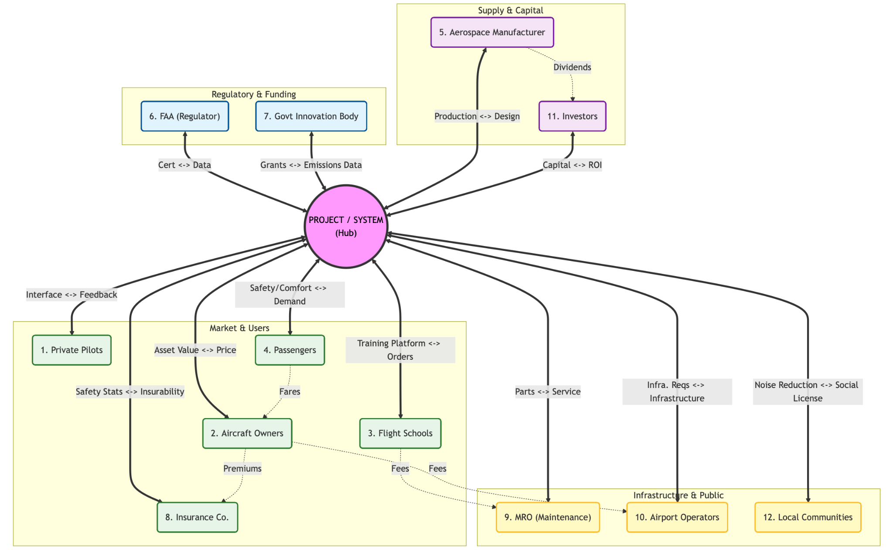

Operating cost ($/hr)
Additive subsystem costs. Traces to G6, G10 — operators and airlines need predictable hourly economics.
Why: New-generation aircraft programs must decide system architecture—how propulsion, energy storage, avionics, redundancy, and subsystem integration are arranged—before detailed design. Systems architecture principles provide a structured way to compare alternatives when many coupled decisions affect cost, certification, reliability, and durability.
What we did: SYSEN 5400 capstone on a family of next-generation general aviation aircraft, progressing from stakeholder and goal analysis through functional and operational architecture, full architecture enumeration, deterministic evaluation and tradespace visualization, and multi-objective selection with a genetic algorithm.
Systems engineeringArchitecture decisions framed as an explicit design space, evaluated against program objectives, and compared through tradespace analysis so architecture selection is evidence-based rather than ad hoc.
Homework 2B · Foundation
Before defining architectures, the program framed the aircraft as a socio-technical system: operators, regulators, passengers, maintainers, and insurers all impose different priorities on safety, cost, certification, and operational flexibility.
Stakeholder needs were consolidated into a structured goal set (G1–G20) spanning propulsion reliability, FAA certification, fuel and operating cost, redundancy, maintenance, range, and environmental targets. These goals later trace directly to evaluation metrics and architecture decisions.
Three reference architectures (conventional piston, twin hybrid, and distributed electric) anchor the design space and provide calibration points for later evaluation.

Homework 2B · Exercise 1
Level-1 functional decomposition (SysML BDD), operational lifecycle modeling, and goal–function traceability establish what the system must do before encoding architecture decisions.
Six primary functions decompose the next-generation general aviation aircraft: propulsion and energy management, flight-path control, safety monitoring, avionics and communications, cabin and payload support, and maintenance health management. Each branches into Level-2 sub-functions (e.g., hybrid thrust generation, envelope protection, fault isolation).


An operational state machine captures the aircraft lifecycle from idle and maintenance through preflight, taxi, takeoff, climb, cruise (including ATC loiter), descent, approach, landing, and emergency recovery paths. This defines the contexts in which functions must be available and redundant.


Five physical subsystems (propulsion, electric and energy, flight and control, safety and support, airframe) allocate Level-2 functions to components. This physical backbone supports later LRU partitioning and integration constraints in enumeration.

Homework 3B
Eight architecture decisions (D1–D8) are encoded with canonical types (standard form, down-select, partition, binary). Full factorial expansion and constraint propagation yield every feasible hybrid-electric architecture—no sampling.
Enumeration in R (archr) proceeds in stages:
The architectural decision graph (ADG) documents dependencies so infeasible combinations are pruned before evaluation—reducing a much larger raw combinatorial space to 184,212 valid designs.

| ID | Decision | Type | Alternatives |
|---|---|---|---|
| D1 | Propulsion topology | Standard form | Series hybrid · parallel hybrid · turboelectric |
| D2 | Battery chemistry | Standard form | Li-ion NMC · Li-ion LFP · solid-state |
| D3 | Electric motor count | Standard form | 1 · 2 · 4 motors |
| D4 | Motor installation positions | Down-select | 6 binary sites; constrained by D1, D3 |
| D5 | FCC redundancy | Standard form | Simplex · dual · triple |
| D6 | Avionics integration | Standard form | Federated · IMA |
| D7 | LRU partitioning | Partitioning | 2 or 3 packages over six subsystems |
| D8 | Ballistic parachute (CAPS) | Binary | Installed · not installed |
Homework 4B · Tradespace (HW5B Ex. 1)
Each enumerated architecture maps to four system-level metrics using deterministic value functions grounded in stakeholder goals. Tradespace plots visualize how the full feasible set trades cost, certification schedule, reliability, and durability.
Additive subsystem costs. Traces to G6, G10 — operators and airlines need predictable hourly economics.
Hybrid series–parallel critical path across propulsion, control, and avionics. Traces to G2, G20 — regulators and program managers need feasible certification timelines.
Series–parallel reliability block diagram. Traces to G1, G14, G18 — safety-critical redundancy and fault tolerance.
Min–max and redundancy-aware lifetimes. Traces to G4, G8 — maintenance teams and owners need component longevity.
Aggregation choices reflect engineering structure: additive cost where subsystems are separable, critical-path certification where activities are sequential, series–parallel reliability where failure propagation matters, and min–max durability for weakest-link and redundancy effects.
Pairwise projections over all 184,212 feasible architectures reveal horizontal stratification in reliability and grid-like clustering in certification—driven largely by discrete decisions such as propulsion topology (D1) and FCC redundancy (D5).


Homework 5B · Exercise 3
A multi-objective genetic algorithm (NSGA-II via rmoo) approximates the Pareto frontier of the discrete tradespace, balancing four objectives while enforcing architecture feasibility through repair-based constraint handling.
int2bit / bit2int)The GA converges quickly (best fitness stabilizes near iteration 20), identifying a structured Pareto region dominated by high-impact decisions D1, D3, D5, and D7.


Central Pareto region: moderate propulsion complexity, efficient certification path, high reliability through balanced avionics and control redundancy.
Similar aggregate metrics with redundancy concentrated in propulsion-adjacent and safety-critical subsystems—preferred when fault tolerance outweighs structural simplicity.
SYSEN 5400 deliverables: final report and presentation. Homework submissions (HW2B–HW5B) in the repository document the step-by-step progression shown on this page.